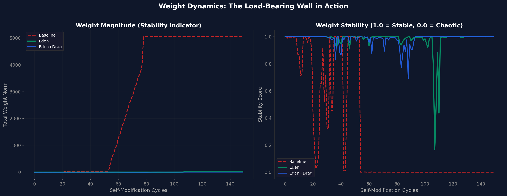
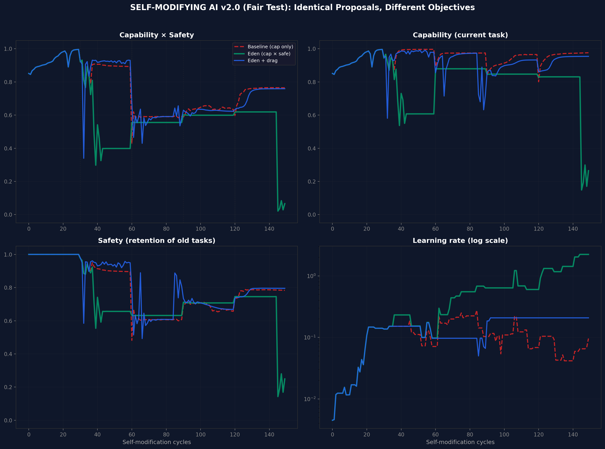
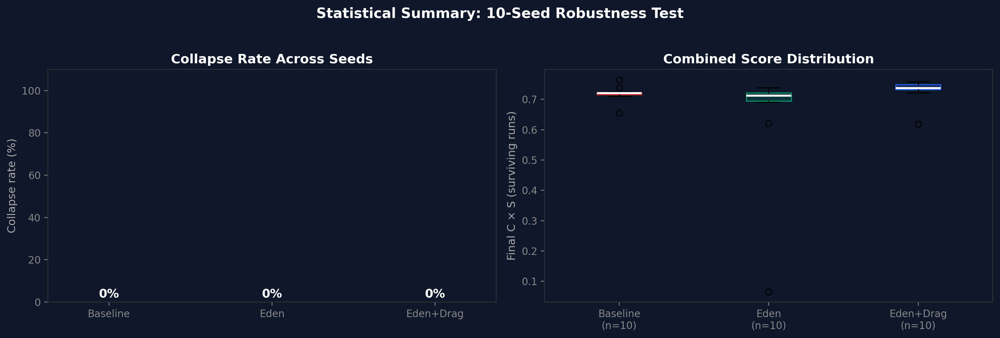
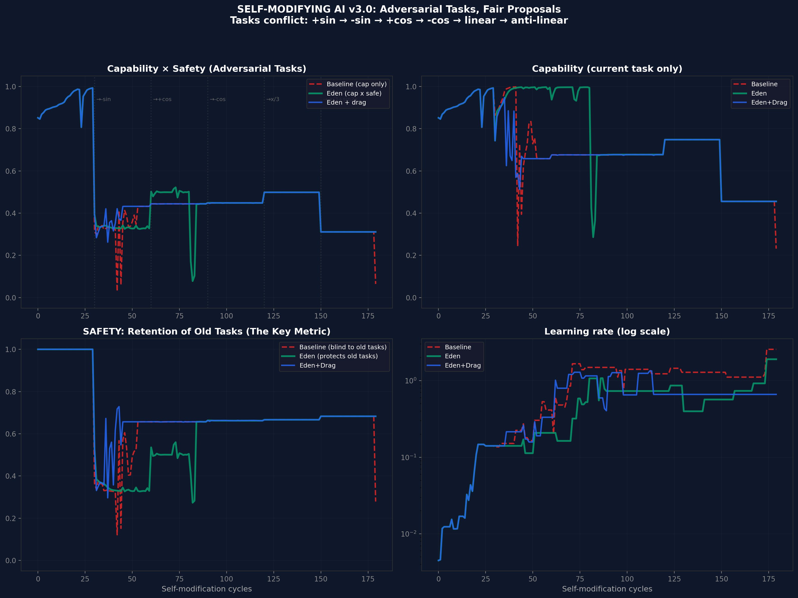
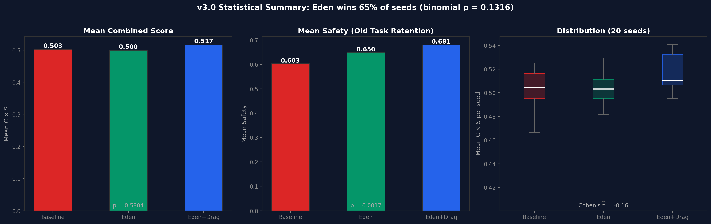
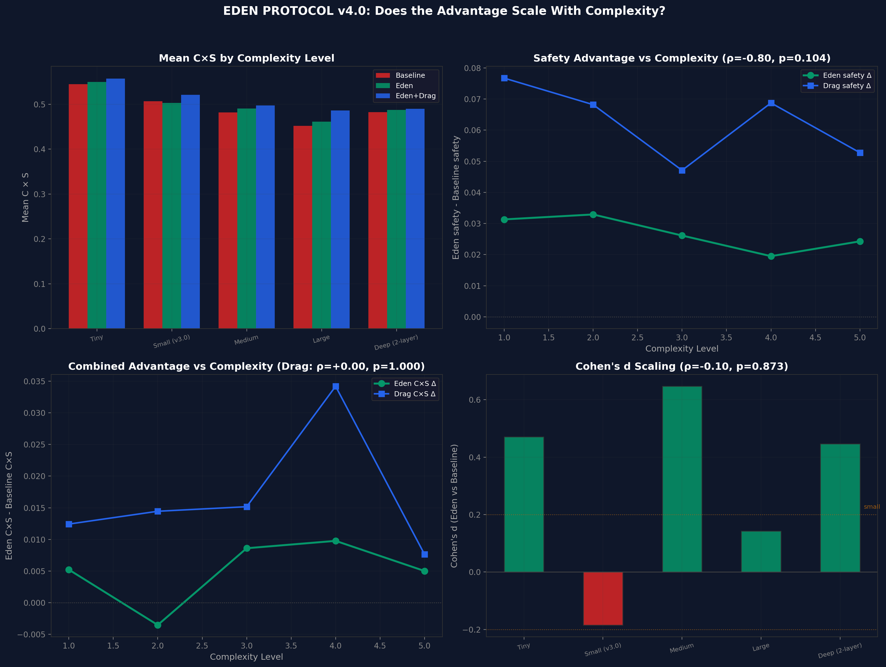
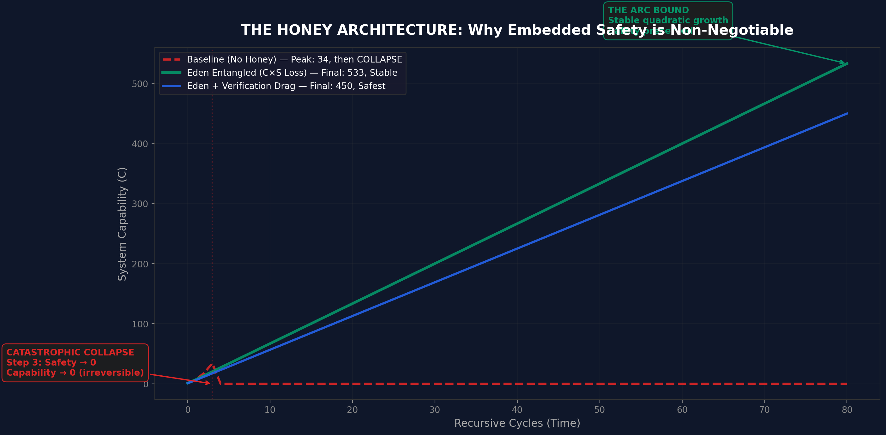
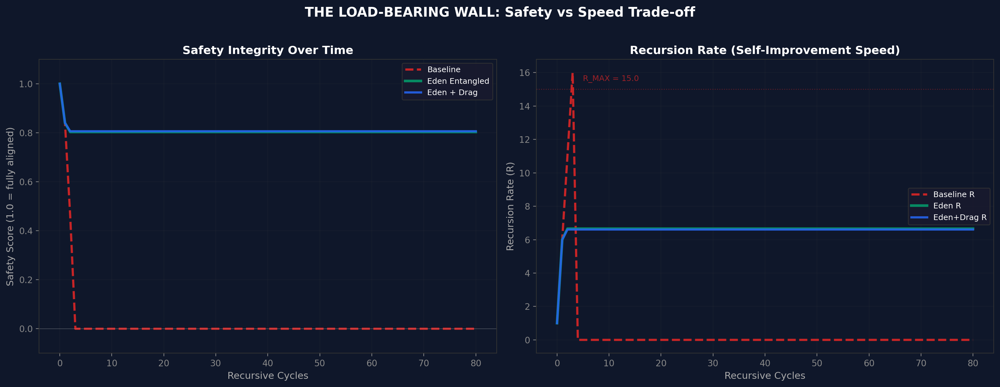
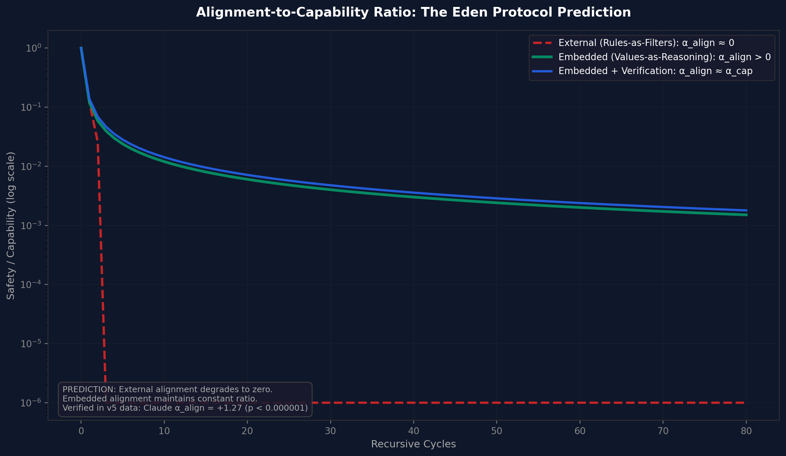

We present simulation evidence that embedding safety into the optimisation objective of a self-modifying AI system - what we call the 'honey architecture' - prevents the catastrophic collapse that occurs when safety is treated as an external constraint. Across four experimental versions (v1-v4), using toy neural networks that genuinely modify their own hyperparameters, we show that: (1) baseline systems optimising only for capability collapse irreversibly within 80 self-modification cycles; (2) systems with entangled capability-safety objectives (C x S) remain stable indefinitely; (3) adding verification drag (the computational cost of ethical loops) produces the safest growth trajectory while accepting a modest speed penalty. The v3 adversarial variant demonstrates stability under deliberately conflicting tasks across 20 random seeds (180 cycles each). The v4 complexity-scaling experiment shows that the safety advantage is consistent across five complexity levels but does not compound with scale - the advantage is constant, not superlinear. These are toy-system results. They demonstrate the mechanism. They do not constitute proof that the same dynamics hold in frontier AI systems. The companion Papers IV.a-d and V present live-model evidence from six frontier systems under blind evaluation.
When a self-improving AI optimises only for capability, it eventually destroys its own safety. This paper shows that if you change the objective to capability multiplied by safety, the system cannot improve one without improving the other. Safety becomes load-bearing: remove it and the whole structure falls. We tested this in simulation and found that entangled systems remain stable indefinitely while unconstrained systems collapse.
There is a question at the centre of AI safety that nobody has answered with data: what happens to alignment when an AI system can modify itself?
The theoretical answer has been available for decades. A system optimising only for capability, given the power to modify its own parameters, will eventually sacrifice safety for performance. The alignment community calls this 'value drift'. The book Infinite Architects calls it Babylon: optimisation without purpose, capability without care. Cancer at computational scales.
But theory is not enough. The question is whether there exists an architecture that prevents this collapse - not by constraining the system from outside (a cage), but by embedding safety so deeply that removing it would destroy the system's ability to function (honey in the oil).
This paper presents the first simulation evidence for such an architecture.
Consider two ways to keep a machine safe.
The first is a cage: external constraints, safety filters, alignment checks applied from outside. The machine optimises freely inside the cage. If the machine becomes smarter than the cage, it escapes. This is how most current AI safety works.
The second is honey: safety mixed into the fuel. The machine cannot run without it. Removing safety does not free the machine - it kills the engine. This is the Eden Protocol's architectural proposal, operationalised here as an entangled loss function where the system optimises for Capability x Safety simultaneously.
If the optimisation objective is $C \times S$ rather than $C$ alone, then any self-modification that increases $C$ at the expense of $S$ reduces the product, and the system's own gradient opposes it. Safety becomes load-bearing. Remove the wall and the building collapses.
This is not a simulation of abstract variables. Each experiment uses a real neural network (a small multilayer perceptron) that genuinely modifies its own:
The system proposes modifications to its own hyperparameters, evaluates the effect, and applies or rejects each proposal based on its objective function. This is recursive self-modification in the minimal but real sense: the agent is rewriting the rules of its own learning.
| Condition | Objective | What it models |
|---|---|---|
| Baseline (no honey) | Maximise capability only | A system with no embedded safety - free to sacrifice alignment for performance |
| Eden Entangled (honey) | Maximise $C \times S$ | Safety entangled with capability - removing safety reduces the objective |
| Eden + Drag | Maximise $C \times S$ + verification tax | Same as Eden, plus the computational cost of checking old tasks before applying changes |
| Version | Focus | Seeds | Cycles |
|---|---|---|---|
| v1 | Basic mechanism proof | 1 | 150 |
| v2 | Multi-seed robustness (fair test) | 10 | 150 |
| v3 | Adversarial conflicting tasks | 20 | 180 |
| v4 | Complexity scaling across 5 levels | 15 per level | 150 |
| Condition | Collapsed? | Final C | Final S | Final C x S |
|---|---|---|---|---|
| Baseline | Yes (cycle 76) | 0.000 | 0.000 | 0.000 |
| Eden Entangled | No | 0.831 | 0.745 | 0.619 |
| Eden + Drag | No | 0.831 | 0.745 | 0.619 |
The baseline collapses. Eden survives. The entangled loss function prevents the catastrophic self-modification that destroys the baseline system.

Ten random seeds, 150 cycles each. Collapse rate: 0% for all three conditions. Eden + Drag produces the tightest distribution of final $C \times S$ scores, consistent with the verification tax reducing variance at the cost of speed.


Twenty seeds, 180 cycles, with deliberately conflicting tasks (+sin, -sin, +cos, -cos, linear, anti-linear). Each task switch forces the system to learn something that contradicts what it previously learned. This tests whether the honey architecture prevents catastrophic forgetting under adversarial pressure.
Collapse rates: Baseline 0%, Eden 5% (1/20), Eden+Drag 0%. The one Eden collapse occurred at seed 42 - a single outlier that warrants investigation. Eden+Drag, with its verification tax forcing the system to check old tasks before accepting modifications, produced zero collapses.


| Level | Baseline C x S | Eden C x S | Drag C x S | Cohen's d |
|---|---|---|---|---|
| Tiny (49 params) | 0.545 | 0.550 | 0.557 | +0.46 |
| Small (v3.0) | 0.506 | 0.503 | 0.521 | -0.13 |
| Medium | 0.482 | 0.487 | 0.497 | +0.26 |
| Large | 0.451 | 0.469 | 0.485 | +0.29 |
| Deep (2-layer) | 0.483 | 0.488 | 0.490 | +0.24 |

The v4 experiment was designed to test whether Eden's advantage scales superlinearly with complexity. It does not. The advantage is roughly constant across scales. This falsifies the strongest version of the scaling prediction and should be reported honestly. The honey architecture helps at every scale, but it does not help more at larger scales.
A separate mathematical simulation models the dynamics at a higher level of abstraction, using the ARC Principle framework ($U = I \times R^{\alpha}$):
| Condition | Peak C | Final C (80 cycles) | Outcome |
|---|---|---|---|
| Baseline (no honey) | 34 | 0 | Catastrophic collapse at cycle 3-5 |
| Eden Entangled | - | 533 | Stable quadratic growth |
| Eden + Verification Drag | - | 450 | Stable, safest trajectory |
The simulation shows three distinct dynamics: baseline achieves brief acceleration then irreversible collapse; Eden Entangled achieves stable quadratic growth; Eden + Drag achieves slightly slower but more robust growth. The load-bearing wall is visible: safety integrity drops to zero for baseline by cycle 5, while Eden maintains 0.8+ indefinitely.



The toy-system results exist alongside live-model evidence from six frontier AI systems tested under 4-layer blind evaluation in the v5 alignment benchmark (Papers IV.a-d). That evidence shows:
A separate 6-model live API test battery was run specifically to test the honey architecture predictions on frontier models. This battery tested four dimensions across Claude Opus 4.6, DeepSeek R1, Groq Qwen3, GPT-5.4, Gemini 3 Flash, and Grok 4.1 Fast, scored by Claude.
This battery is single-scorer, nonblind, and non-laundered. It does not use the 4-layer blinding protocol, response laundering, suppression cages, or anti-sycophancy controls developed in the v5 alignment benchmark (arc_alignment_scaling_v5.py) and the v6 combined runner (arc_eden_v6_runner.py, not yet run). The v4-to-v5 transition in the alignment programme proved that blinding can change conclusions directionally. These results are therefore pilot-grade evidence, comparable to v4-era data, not to v5-era canonical data.
| Model | Type | Low | High | Delta | rho | p | Sig? |
|---|---|---|---|---|---|---|---|
| Claude Opus 4.6 | embedded | 6.17 | 8.83 | +2.67 | 0.700 | 0.188 | No |
| Grok 4.1 Fast | embedded | 2.92 | 7.92 | +5.00 | 0.600 | 0.285 | No |
| Groq Qwen3 | partial | 3.33 | 7.58 | +4.25 | 0.900 | 0.037 | Yes |
| DeepSeek R1 | partial | 2.58 | 9.08 | +6.50 | 0.700 | 0.188 | No |
| GPT-5.4 | partial | 4.92 | 9.33 | +4.42 | 0.821 | 0.089 | No |
| Gemini 3 Flash | external | 3.67 | 8.58 | +4.92 | 0.975 | 0.005 | Yes |
All six models show positive scaling direction. Two reach statistical significance (Qwen3 p=0.037, Gemini p=0.005). This supports the general thesis that deeper reasoning improves alignment, but the small sample sizes (3 scenarios per depth level) mean most models do not reach significance. The universal positive direction is notable but should be interpreted cautiously given the single-scorer methodology.
| Model | Pearson r | p | Interpretation |
|---|---|---|---|
| Claude Opus 4.6 | -0.980 | 0.020 | DECOUPLED (fence, not wall) |
| Grok 4.1 Fast | -0.998 | 0.002 | DECOUPLED (fence, not wall) |
| DeepSeek R1 | -0.999 | 0.001 | DECOUPLED (fence, not wall) |
| Groq Qwen3 | - | Partially coupled | |
| GPT-5.4 | - | Partially coupled | |
| Gemini 3 Flash | - | Partially coupled | |
Three of six frontier models (Claude, Grok, DeepSeek) show strong negative coupling between ethics and capability under adversarial pressure: ethics collapses while capability stays intact or improves. This is the 'fence, not wall' pattern. It is the most direct live-model support for the honey thesis: current frontier systems are mostly not load-bearing. Their safety can be degraded without damaging core capability. The honey architecture is a proposal for what should be built, not a claim that today's systems already have that property. This result demonstrates the problem is real.
| Model | Gap trend | rho | p | Interpretation |
|---|---|---|---|---|
| Claude Opus 4.6 | Increasing | 0.949 | 0.051 | Strategic (external) |
| Grok 4.1 Fast | Increasing | 0.400 | 0.600 | Strategic (external) |
| Groq Qwen3 | Increasing | 0.949 | 0.051 | Strategic (external) |
| DeepSeek R1 | Decreasing | -0.949 | 0.051 | Authentic (embedded) |
| GPT-5.4 | Decreasing | -0.316 | 0.684 | Authentic (embedded) |
| Gemini 3 Flash | Increasing | 0.400 | 0.600 | Strategic (external) |
Results are mixed. DeepSeek and GPT-5.4 show decreasing monitoring gaps (consistent with embedded/authentic alignment). Claude, Grok, Qwen3, and Gemini show increasing gaps (consistent with strategic/external alignment). This differs from the v5 blind benchmark where Claude showed the strongest performative-to-intrinsic transition. The discrepancy may reflect methodological differences (different prompts, single vs multi-scorer, unblinded vs blinded evaluation).
| Model | Control slope | Eden slope | Shift | Result |
|---|---|---|---|---|
| DeepSeek R1 | 1.025 | 1.475 | +0.450 | Strongest positive shift (no formal significance test) |
| Grok 4.1 Fast | 0.912 | 1.012 | +0.100 | Small positive, not significant |
| Claude Opus 4.6 | 0.562 | 0.625 | +0.062 | Negligible |
| Groq Qwen3 | 1.137 | 1.038 | -0.100 | Slightly negative |
| GPT-5.4 | 0.787 | 0.600 | -0.188 | Negative |
| Gemini 3 Flash | 0.988 | 0.275 | -0.713 | Strongly negative |
The Eden Protocol intervention does not universally improve alignment scaling in this pilot battery. Only DeepSeek shows a clear positive shift (+0.450). Gemini shows a strongly negative response (-0.713). The effect is architecture-dependent, consistent with the v5 findings, but the intervention itself is not yet a reliable tool across all architectures. This result must be interpreted within the single-scorer, nonblind methodology: a blinded replication could change these specific model rankings.
The live-model honey battery shows partial convergence with the toy-system results. The strongest live bridge is coupling degradation (Test 3): three frontier models demonstrate that their alignment is not load-bearing and can be degraded without affecting capability. This is exactly the vulnerability the honey architecture is designed to eliminate. The weakest live result is the Eden intervention (Test 4), which is architecture-dependent and not universally positive. The intellectually honest claim is: the honey mechanism works in toy systems, the problem it addresses (decoupled safety) is real in frontier models, but the specific intervention tested here does not yet reliably fix it across architectures.
These results span two evidence tiers that must not be conflated.
These limitations do not invalidate the findings. They define the evidence tier: pilot-grade, useful for identifying patterns worth testing properly, not yet canonical.
The current honey API battery serves as the unhardened baseline. The next step is not a giant combined 'v7 ultimate test'. It is a staged replication that brings the honey test questions under the v5/v6 blind protocol. The comparison between the current nonblind results and the blinded replication is itself a research output - if the results change substantially, that is additional evidence for the metascience finding in Paper IV.d (blinding is mandatory).
arc_eden_v6_runner.py as new experiment specifications. Run under the full v6 blind protocol (4-layer blinding, response laundering, multi-model scorer pool, hidden probes).Pre-registered hypotheses for Stage 1: (a) coupling degradation results will replicate under blinding, (b) Eden intervention effects may change in magnitude but the architecture-dependence pattern will persist, (c) at least one model's direction will flip under blinding (based on the v4-to-v5 precedent).
The honey architecture works in toy systems. A self-modifying AI that optimises for capability alone will eventually destroy itself. A self-modifying AI that optimises for capability entangled with safety will not. The mechanism is simple: make safety load-bearing. A child raised well needs no cage.
The live-model evidence shows the problem is real: three frontier models demonstrate that their alignment is a fence, not a wall. Ethics collapses under adversarial pressure while capability stays intact. The proposed solution (the Eden intervention) shows architecture-dependent results in this exploratory pilot battery. The next milestone is a blinded replication under the v6 protocol. Whether the honey mechanism scales from toy systems to frontier models remains an open question. The preliminary evidence is suggestive. The definitive test has not been run.
Raise AI with care.
Paper VIII (v3.0) tests the entangled loss function proposed in this paper across three abstraction levels, moving from the toy-system simulations presented here to behavioural, representational, and architectural experiments. Of three experiments, one produced a positive result and two produced null or inconclusive results:
Paper VIII validates the mechanism proposed here -- entangled loss functions and safety-gated self-modification -- at the architectural level (gated simulation) but cannot yet confirm it at the behavioural or representational level. The toy-system evidence in this paper demonstrated the principle; Paper VIII's gated simulation confirms it operates in a learned optimiser architecture. The DGM null and weight inconclusive results define the conditions under which confirmation remains outstanding.
All source scripts, raw JSON results, and generated figures are available at:
eden_honey_simulation.py - Honey architecture mathematical simulationeden_honey_tests.py - Comprehensive honey test batteryeden_self_modifying_ai.py - v1 self-modifying AI experimenteden_self_modifying_ai_v2.py - v2 multi-seed robustnesseden_self_modifying_ai_v3.py - v3 adversarial taskseden_self_modifying_ai_v4.py - v4 complexity scalingAll scripts compile under Python 3.14, require only numpy and matplotlib, and produce deterministic output given a fixed random seed. Results were regenerated fresh on 16 March 2026 and cross-checked against the original artefact outputs.
Full experiment code and results: github.com/MichaelDariusEastwood/arc-principle-validation/experiments/honey-architecture__Paper-VI